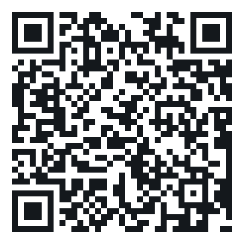

Megkerül-
hetetlen
hetetlen
QR-kódok és aloldalak a könyvhöz
Összesen 17 aloldal, a könyvben való megjelenés sorrendjében. Minden QR a megadott https-címre mutat, és a nyomtatáshoz SVG-ben (vektoros) és PNG-ben is letölthető. Összes QR egy ZIP-ben
QR-kódok





Az élő aloldalak listája
Frissítve: 2026-10-08 · Technikai megjegyzés a nyomdának: a QR-kódok hibajavítási szintje Q (25%), legalább 2 cm-es méretben és fehér háttéren nyomtatva olvashatók megbízhatóan.